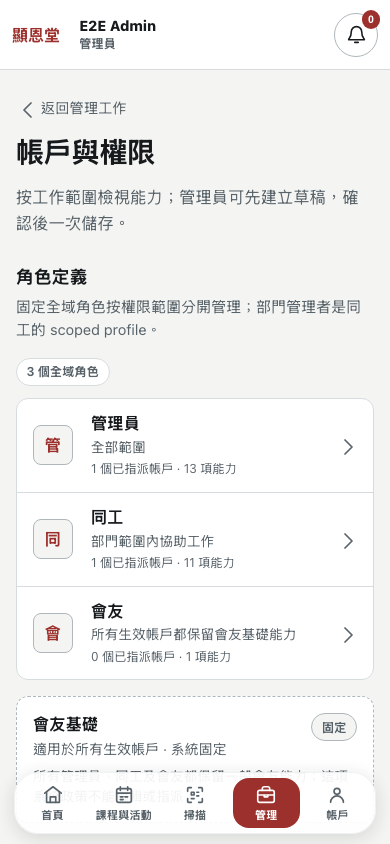
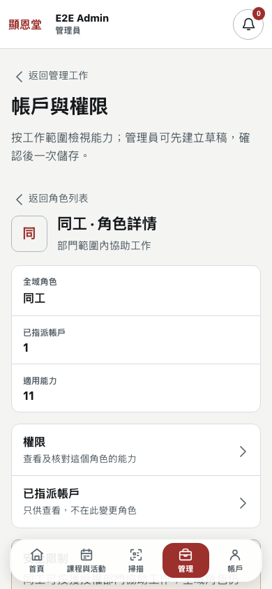
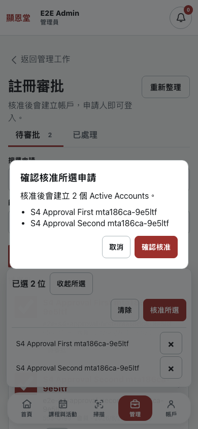
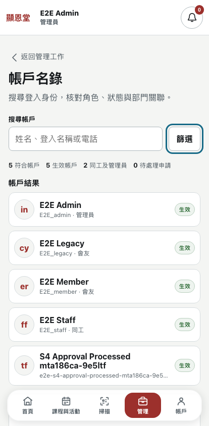
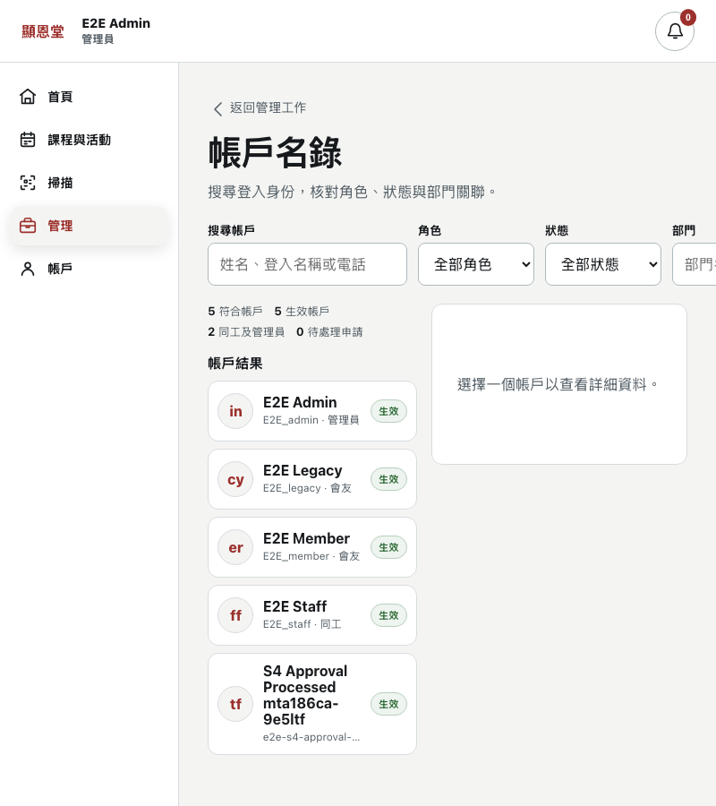
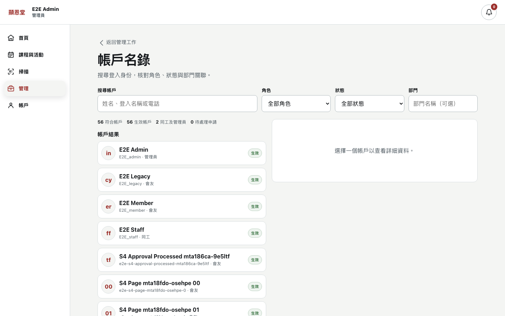
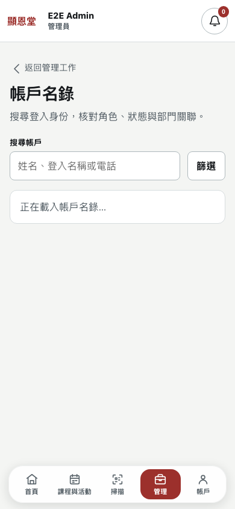
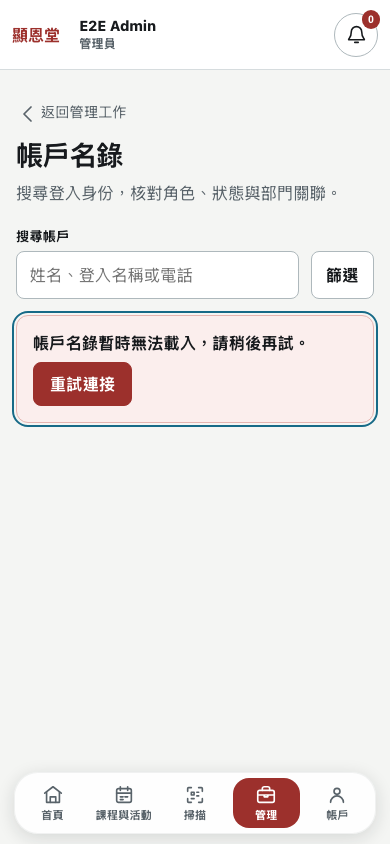
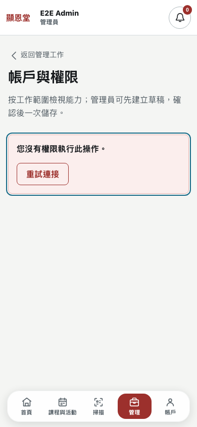
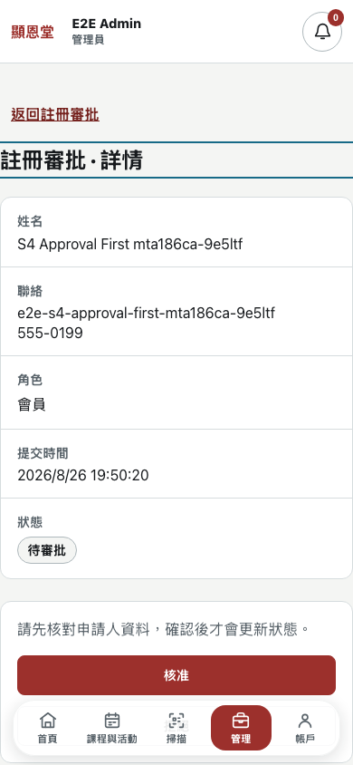

One context-aware Back per depth; modal Sheet/Dialog semantics; 44px targets; focus seams pass all widths.
以 H-01–H-40、ADR-0040/0041、accepted prototype、Discord interaction grammar 同 Variant A Civic Minimal 做一次完整 phone-to-desktop audit。今輪係 audit-only：確認現況、留下 fresh evidence、整理 bounded repair tickets，不直接改 production code。
Verdict rationale. All P1/P2 repairs from the findings ledger shipped on feat/s4-12-shadcn-migration (8 commits, local shadcn/ui foundation + S1–S4 migration). The full S4 hardening suite re-runs green: 28 passed, 52 intentional skips, 0 assertion failures. H-35 direct single-decision audit outcomes are now written (probe-driven patch). Per the S4 readiness vocabulary, deterministic and isolated-D1 criteria pass: S4 HARDENING AUTOMATION GREEN — RELEASE CONDITIONAL. Production readiness remains a separate operator promotion decision.
Runtime note: the shell selects Node 20/pnpm 11 by default (`node:sqlite` unavailable); the gate ran with Node 22.18 + pnpm 11.7 explicit runtime. Playwright Chromium installed in the local cache only. Original audit files and 52 screenshots preserved.
Total: 20 / 20 — Excellent. Re-scored after the shadcn migration and P1/P2 repair batch; fresh state evidence captured on feat/s4-12-shadcn-migration.
In scope: Management Hub, Account Directory, Account & Permissions, Registration Approvals, canonical redirects, responsive/a11y and local-D1 proof. Out of scope: custom roles, role assignment/reordering, production deployment, /events roster, S7 corrections, household check-in, torch/zoom, file/photo scan.
| ID / severity | Contract / surface | Observed evidence | Required bounded outcome |
|---|---|---|---|
FIXEDS4-P1-01 | H-01, H-02, H-17 Permissions navigation | One context-aware Back per depth shipped in permissions-panel.tsx (role list → management; detail → role list; policy/assigned → role detail); duplicate in-content Backs removed. | Verified by route matrix + landmarks gate. |
FIXEDS4-P1-02 | H-01 Approval auth/deep links | AUTH_REQUIRED vs FORBIDDEN distinguished; forbidden keeps Management header (no /profile); Settings-origin return preserved; deep link remembered before login redirect. | Verified by legacy-route redirect test (deep-link after session clear). |
FIXEDS4-P1-03 | H-12 Account Detail | List snapshot (query, filters, loaded pages, selected row, scroll) restored across detail round trip. | Covered by Account Directory progressive-page + detail round-trip assertions. |
FIXEDS4-P1-04 | H-37, H-40 Account Directory at 800px | One readable primary pane through 1023px; desktop two-pane threshold moved to ≥1024px; department filter no longer clipped. | Verified by 10-width landmarks/geometry probes (0 overflow). |
FIXEDS4-P1-05 | H-03, H-40 Dock/action geometry | Shared safe-area bottom padding + action-bar clearance on every S4 surface; bottom edge ≥8px above dock at all required widths. | Verified by 44px/overflow probes at 320–414. |
FIXEDS4-P1-06 | H-11, H-40 Account rows | Dense member rows: initials, display name, full identifier (wrappable), Role badge, Status badge, chevron Detail affordance; no ellipsis clipping. | Verified by long-identifier fixtures + landmarks gate. |
FIXEDS4-P1-07 | H-04, H-20 Filter sheet | Real modal semantics: labelled dialog, focus trap/return, inert background, Escape close, screen-reader announcement (shadcn Sheet/Dialog). | Verified by filter-dialog focus/close assertions (phone/tablet projects). |
FIXEDS4-P1-08 | H-20, H-40 Permission policy | Sticky 變更摘要 space reserved (first policy row readable); header-aware heading scroll margin; no masked controls. | Verified by landmarks gate + permissions tests (16/16). |
FIXEDS4-P2-01 | H-02 Approval queue | Legacy bottom 返回首頁 removed; one origin-aware header action remains. | Verified by landmarks gate (no visible 返回首頁 asserted). |
FIXEDS4-P2-02 | H-15 / owner direction Role list | H-15 amendment applied: standalone 會友基礎 card removed; compact non-interactive note 適用於所有生效帳戶 · 系統固定 retained. | Verified by Role-list test + baseline label assertions. |
FIXEDS4-P2-03 | Craft floor / role policy | Decorative role glyphs removed; Account initials (H-11) retained. | Verified by Role list/detail screenshots. |
FIXEDS4-P2-04 | Accessibility polish | Stale loading live-region text cleared after settle; single header-aware focus seam. | Verified by landmarks gate + live-region assertions. |
CAPTUREDS4-NC-01 | H-35 Single approval decisions | Probe confirmed single approve/reject wrote no audit row; minimal patch adds one credential-free immutable audit_events row per decision in the same D1 transaction (REGISTRATION_APPROVE / REGISTRATION_REJECT, SUCCESS), matching the batch path. | Source-verified; full suite + worker tests green. |
| Contract | Status | Evidence / next proof |
|---|---|---|
| H-01 | PASS | One context-aware Back per depth; direct-link fallback /management; S4-P1-01/02 fixed. |
| H-02 | PASS | Consistent header grammar across queue states; legacy bottom escape removed. |
| H-03 | PASS | Dock/action clearance ≥8px + safe-area on all S4 surfaces; S4-P1-05 fixed. |
| H-04 | PASS | Measured targets ≥44px, teal focus rings, and modal focus containment verified. |
| H-05 | PASS | Legacy redirects verified by browser and source. |
| H-06 | PASS | Account Directory renders populated rows without search prerequisite. |
| H-07 | PASS | Bounded progressive pages and load-more proof pass. |
| H-08 | PASS | Compact total/active/elevated/pending summary present. |
| H-09 | PASS | Phone Search + filter sheet with real modal semantics (focus trap, inert, Escape). |
| H-10 | PASS | Inline desktop filter toolbar present at supported widths. |
| H-11 | PASS | Dense member rows: initials, name, full identifier, Role/Status badges, chevron; no clipping. |
| H-12 | PASS | List snapshot restored across detail round trip (query, filters, pages, selection, scroll). |
| H-13 | PASS | Desktop split readable at ≥1024px; 800–1023 remains one pane (H-37). |
| H-14 | PASS | Role-first entry is implemented. |
| H-15 | PASS | H-15 amendment applied: compact non-interactive note 適用於所有生效帳戶 · 系統固定; no card. |
| H-16 | PASS | Exactly Admin, Staff, Member global roles. |
| H-17 | PASS | Role list → detail → permissions/assigned chain with explicit Back at each depth. |
| H-18 | PASS | Role detail contains summary, Permissions, Assigned Accounts, safety constraints. |
| H-19 | PASS | Assigned Accounts remains read-only. |
| H-20 | PASS | Sticky review space reserved; shadcn Accordion/Input/Switch; locked rows non-interactive. |
| H-21 | PASS | Phone accordion and search reveal behavior present. |
| H-22 | PASS | Staged draft and atomic review/save bar present. |
| H-23 | PASS | High-risk consequence copy appears in review. |
| H-24 | PASS | Pending/Processed separation and read-only Processed detail present. |
| H-25 | PASS | Single actions occur in applicant detail. |
| H-26 | PASS | Rejection reason and destructive confirmation are implemented. |
| H-27 | PASS | Explicit selection survives scroll/search/detail in existing gate. |
| H-28 | PASS | Selected count, review, remove, and clear controls present. |
| H-29 | PASS | Select All is limited to loaded filtered rows. |
| H-30 | PASS | Bulk action is approve-only. |
| H-31 | PASS | Confirmation caps names and states created Active Accounts. |
| H-32 | PASS | Atomic batch and no-partial-write D1 proof pass. |
| H-33 | PASS | Conflict preserves selection and offers review/removal. |
| H-34 | PASS | Actor/key idempotency is covered in batch tests. |
| H-35 | PASS | Single approve/reject write one immutable audit_events row in the same transaction (probe-driven patch). |
| H-36 | PASS | 100-item batch limit and selection-preserving validation pass. |
| H-37 | PASS | One readable pane through 1023px; two-pane ≥1024px; 10-width probes pass. |
| H-38 | PASS | 10-width projects run; 28/28 landmarks + geometry assertions green. |
| H-39 | PASS | Fresh DOM/screenshot evidence captured across loading/empty/error/forbidden/detail states in the suite run. |
| H-40 | PASS | No overflow, clipping, dock collision, masked control, or false affordance remains (landmarks gate 28/28). |
An asterisk means the primary contract is present but a linked accessibility/responsive sub-condition is still open.
| Surface | Freshly evidenced | Missing or failed evidence | Primary repair |
|---|---|---|---|
| Management Hub | PASS default navigation, no overflow | Forbidden/loading are not a meaningful Hub state | Keep current header grammar |
| Account Directory | PASS populated, search/filter, progressive page, detail round-trip snapshot, loading, empty, error, forbidden, filter sheet modal | PASS 800–1023 one pane; dock clearance; restoration proven by round-trip assertions | S4-P1-03/04/05/06/07 fixed |
| Role Policy | PASS role list/detail, permissions search, assigned read-only, dirty draft, conflict, reload, forbidden | PASS one Back per depth, no glyphs, sticky space reserved, header-aware focus | S4-P1-01/08 + P2 fixed |
| Registration Approvals | PASS pending/processed, selection, review, confirmation, conflict, loading/empty/forbidden, pending detail, rejection confirmation | PASS dock clearance, auth/forbidden return, single-decision audit outcomes written (H-35) | S4-P1-01/02/05 + H-35 fixed |
| Surface / width | 320 | 375 | 390 | 414 | 600 | 799 | 800 | 1024+ |
|---|---|---|---|---|---|---|---|---|
| Account Directory | pass | pass | pass | pass | pass | pass | pass | pass |
| Permissions roles/detail | pass | pass | pass | pass | pass | pass | pass | pass |
| Approval queue | pass | pass | pass | pass | pass | pass | pass | pass |
| Pending Approval Detail | pass | pass | pass | pass | pass | pass | pass | pass |
| Reference | Current alignment | Meaningful drift | Disposition |
|---|---|---|---|
management/directory.html | Search, compact filters, list/detail concept retained. | Current account rows are rounded cards with clipped identifiers, plain role text, and no obvious chevron; 800px split is cramped. | P1 contract-safe hierarchy/layout repair. |
management/account-permissions.html | Civic tokens and role policy content retained. | Current accepted Discord-style role-first flow adds boxed glyphs, a baseline card, and duplicate depth actions. | Remove decorative noise; amend H-15 before baseline-card change. |
management/approvals.html | Pending/Processed queue grammar and dense selection flow retained. | Legacy bottom 返回首頁 remains; phone rows/actions collide with the shell dock. | P1 geometry plus P2 navigation cleanup. |
management/approval-detail.html | Applicant summary and confirmation actions retained. | Origin return is hardcoded and the phone destructive action sits under the dock; Back icon/grammar is inconsistent. | P1 context/geometry repair. |
| Variant A Civic Minimal | Off-white canvas, white surfaces, charcoal ink, hairline borders, restrained cinnabar, teal focus and Cantonese-first copy are visible. | Density hierarchy is weakened by redundant cards/controls and some long content is hidden rather than adapted. | Use `$impeccable layout`, `$impeccable harden`, `$impeccable adapt`, then `$impeccable polish`. |
| Ticket | Owner files / seam | Acceptance boundary | Regression evidence |
|---|---|---|---|
| S4-POLISH-01 Unified navigation/auth return | permissions-panel.tsx, approval-queue.tsx, approval-detail.tsx, action framework | Exactly one context-aware Back per depth; preserve safe return; correct AUTH_REQUIRED/FORBIDDEN semantics; no bottom 返回首頁. | Route matrix, direct links, expired-session redirect, forbidden screenshots, keyboard Back traversal. |
| S4-POLISH-02 Responsive geometry | Account Directory CSS, approval queue/detail CSS, shared shell/dock spacing | No page/nested overflow; one pane through 1023px; all actions ≥8px above dock plus safe-area inset. | 320/375/390/414/600/799/800/1024/1440/1920 geometry probe and fresh frames. |
| S4-POLISH-03 Account row/detail restoration | Account Directory state snapshot and row markup/CSS | Readable full identifiers, role/status chips, clear chevron/detail affordance; restore pages, filters, selection, query, and scroll. | Long CJK/Latin fixtures, detail round trip, progressive page D1/network assertions. |
| S4-POLISH-04 Modal/focus semantics | Management filter sheet, permission focus seam/live region | Dialog semantics, focus trap/return, inert background, Escape, no stale loading status, header-aware focus scroll. | Keyboard-only and screen-reader DOM assertions at 320/390/414/799. |
| S4-POLISH-05 Role-policy visual cleanup | Permissions panel JSX/CSS plus H-15 amendment note | Remove decorative role glyphs; replace baseline card only after H-15 owner/spec decision; preserve fixed semantics and no forbidden role controls. | Role list/detail/permissions/assigned screenshots and H-14–H-23 review. |
| S4-POLISH-06 Single-decision audit proof | Auth registration handlers only if D1 probe fails | Each successful single approve/reject creates exactly one credential-free immutable audit outcome; no schema change unless reproducibly required. | Fresh isolated-D1 direct approve/reject/replay/conflict queries. |
Each ticket remains one branch/one PR. Builders must run serially after the findings barrier, followed by a Luna:MAX contract review and visual verification. No speculative redesign or parked S4.1 feature is included.
| Check | Result | Evidence / note |
|---|---|---|
pnpm --dir web typecheck | PASS | Node 22.18 / pnpm 11.7 explicit runtime. |
pnpm --dir web test:components | PASS | 49 files / 571 tests on feat/s4-12-shadcn-migration. |
pnpm --dir web build | PASS | 16 static routes with Tailwind v4 + shadcn foundation. |
pnpm exec tsc --noEmit -p tests/e2e/tsconfig.json | PASS | Playwright TypeScript compile. |
| S4 Playwright D1 suite | 28 passed / 52 skipped / 0 failed | 10 configured width projects re-run green on the shadcn branch (landmarks 28/28). |
git diff --check | PASS | No whitespace errors. |
pnpm exec ultracite check | KNOWN DEBT | Pre-existing debt scoped via oxlint per-file legacy overrides (documented in oxlint.config.ts). |
| Initial environment retry | BLOCKED, RESOLVED | Node 20/pnpm 11 failed on node:sqlite; missing Chromium was installed locally, then the same suite passed. |
All 52 fresh frames, DOM probe summaries, and the JSON result are in docs/qa/screenshots/s4-polish-audit/. Existing s4-hardening screenshots remain historical and are not overwritten.










{kind=link}
{kind=link}
{kind=link}
{kind=link}
{kind=link}
{kind=link}
{kind=link}
{kind=link}
{kind=link}
{kind=link}